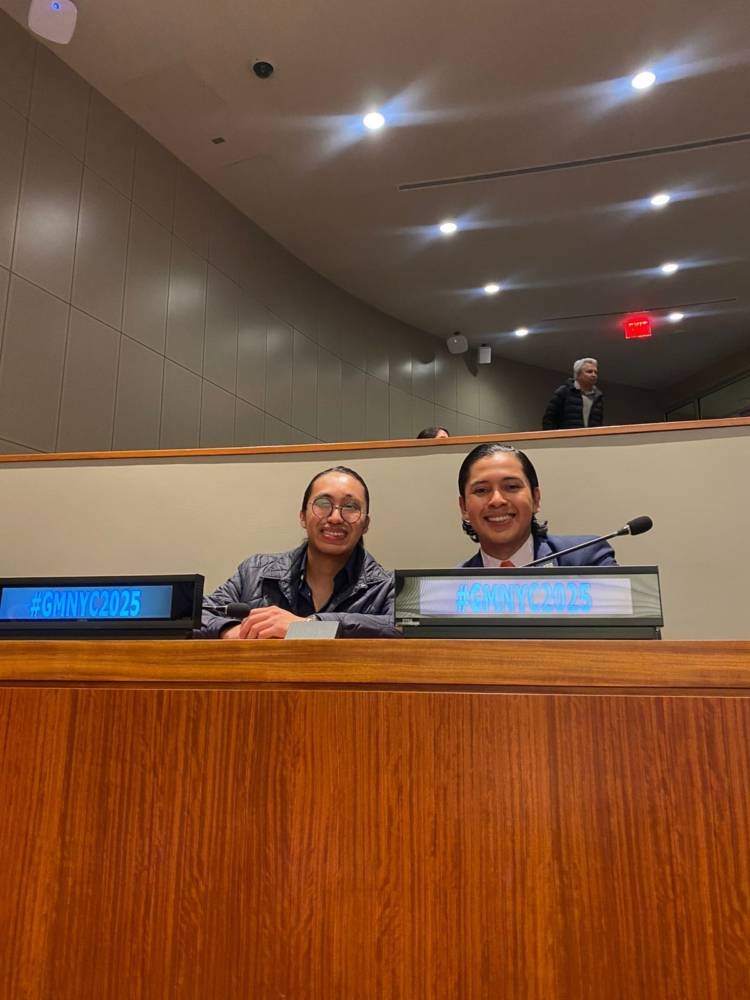
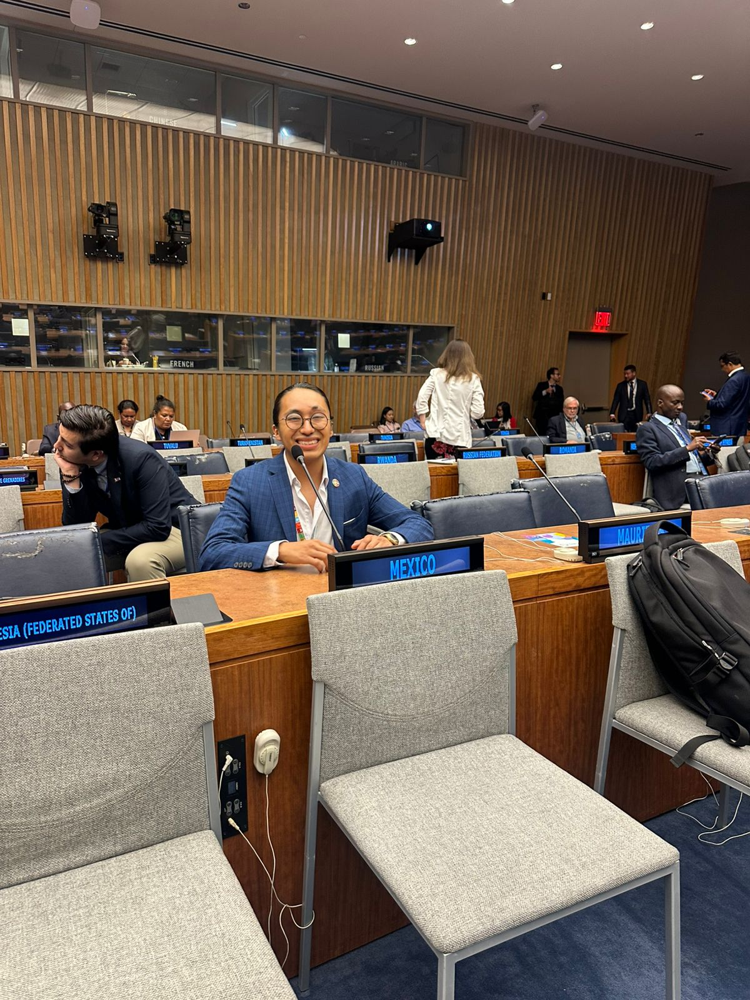

Presenting my book at FIU
Presenting The New Era of Electoral Engineering at FIU was a practical test of academic clarity. It required defensible arguments and structured explanations.

From writing to public discussion
A book presentation in a university context is not only a formal event. It is an opportunity to translate research into clear communication, answer questions with discipline, and clarify the limits of a claim.

What I documented
I treated the presentation as a documented milestone. I focused on explaining the motivation of the work, its conceptual framework, and its relevance to contemporary electoral discussion.